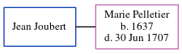

Jean Joubert, the husband of Marie Pelletier (the 8 times great-grandmother of Michele Copp (née Phillips)), and married Marie in Charlesbourg, Quebec, Canada on Sep 24, 1703 (3rd marriage).
Family Tree

Generated by ged2site. Last updated on Jun 6, 2024